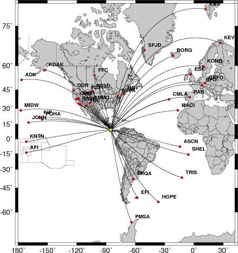
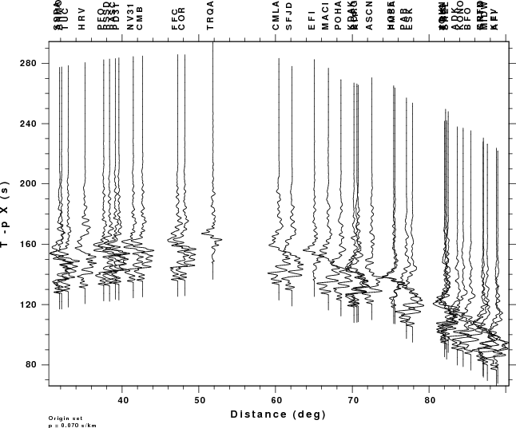

Introduction
The USGS NEIC provides Finite Fault Models for larger earthquakes. An example of this is at http://earthquake.usgs.gov/earthquakes/eqinthenews/2012/usc000cfsd/finite_fault.php.
This tutorial shows how to use the Computer Programs in Seismology codes to make teleseismic P-wave synthetics from the published finite-fault solution.
Requirements
To run the simulations, you will need the following:
- a shell environment pointer to the Greens function directory, e.g.,
GREENDIR=/d/rbh/GREEN, the AK135 velocity file reached by $GREENDIR/Models/tak135sph.mod
- A list of stations for which synthetics are to be made
- the finite fault model given by a link at the bottom of the USGS Finite Fault solution page
, and
- the shell script DOIT
DOIT
The distributed DOIT script is annotated and self contained, in that the script has the finite fault model, e.g., HayesCostaRica.mod, and the station list, stat.list. Although the finite fault model format may be standard, you can adjust the station lsit to your needs, since only the station name, latitude and longitude are required.
For each station, individual sub-fault synthetics are computed and then stacked to make the synthetic for a station. Teleseismic P-wave synthetics are created using hudson96. It is possible to change the script to make SH or SV synthetics.
The following two plots show the stations and the record section.
Note you must use gsac.

